5 Genre Classification for Historical Medical Periodicals
(inproceedings?){DanilovaAangenendt2025, author = {Danilova, Vera and Aangenendt, Gijs}, title = {Post-OCR Correction of Historical German Periodicals using LLMs}, booktitle = {Proceedings of the Third Workshop on Resources and Representations for Under-Resourced Languages and Domains (RESOURCEFUL-2025)}, publisher = {ACL}, year = {2025} }
(inproceedings?){DanilovaSoderfeldt2025, author = {Danilova, Vera and Söderfeldt, Ylva}, title = {Classifying Textual Genre in Historical Magazines (1875-1990)}, booktitle = {Proceedings of the 9th Joint SIGHUM Workshop on Computational Linguistics for Cultural Heritage, Social Sciences, Humanities and Literature (LaTeCH-CLfL 2025)}, publisher = {ACL}, year = {2025} }
(book?){Petrenz2004, author = {Petrenz, P.}, year = {2004}, title = {A placeholder title for Petrenz 2004 on genre classification}, publisher = {Placeholder Publisher} }
(book?){Kessler1997, author = {Kessler, B. and Nunberg, G. and Schütze, H.}, year = {1997}, title = {Automatic detection of text genre}, booktitle = {Proceedings of the 35th Annual Meeting of the Association for Computational Linguistics}, pages = {32–38}, publisher = {ACL} }
(book?){Broersma2010, author = {Broersma, M.}, year = {2010}, title = {A placeholder title for Broersma 2010 on communicative strategies}, publisher = {Placeholder Publisher} }
(inproceedings?){Conneau2020, author = {Conneau, Alexis and Khandelwal, Kartik and Goyal, Naman and Chaudhary, Vishrav and Wenzek, Guillaume and Guzm{’a}n, Francisco and Grave, Edouard and Ott, Myle and Zettlemoyer, Luke and Stoyanov, Veselin}, title = {Unsupervised Cross-lingual Representation Learning at Scale}, booktitle = {Proceedings of the 58th Annual Meeting of the Association for Computational Linguistics}, month = jul, year = {2020}, address = {Online}, publisher = {Association for Computational Linguistics}, url = {https://www.aclweb.org/anthology/2020.acl-main.747}, doi = {10.18653/v1/2020.acl-main.747}, pages = {8440–8451} }
(inproceedings?){Devlin2019, author = {Devlin, Jacob and Chang, Ming-Wei and Lee, Kenton and Toutanova, Kristina}, title = {{BERT}: Pre-training of Deep Bidirectional Transformers for Language Understanding}, booktitle = {Proceedings of the 2019 Conference of the North {A}merican Chapter of the Association for Computational Linguistics: Human Language Technologies, Volume 1 (Long and Short Papers)}, month = jun, year = {2019}, address = {Minneapolis, Minnesota}, publisher = {Association for Computational Linguistics}, url = {https://www.aclweb.org/anthology/N19-1423}, doi = {10.18653/v1/N19-1423}, pages = {4171–4186} }
(inproceedings?){Schweter2022, author = {Schweter, Stefan and H tarihi, Erion}, title = {hm{BERT}: Historical Multilingual Language Models for Named Entity Recognition}, booktitle = {Proceedings of the Thirteenth Language Resources and Evaluation Conference}, month = jun, year = {2022}, address = {Marseille, France}, publisher = {European Language Resources Association}, url = {https://aclanthology.org/2022.lrec-1.561}, pages = {5235–5242} }
(inproceedings?){LepekhinSharoff2022, author = {Lepekhin, Nikita and Sharoff, Serge}, title = {Web Genre Classification with Deep Learning Models: A Comparative Study}, booktitle = {Proceedings of the 2nd Workshop on Resources for Computational Humanities and Social Sciences (ResHum 2022)}, month = jun, year = {2022}, address = {Marseille, France}, publisher = {European Language Resources Association}, url = {https://aclanthology.org/2022.reshum-1.1}, pages = {1–9} }
(inproceedings?){KuzmanLjubesic2023, author = {Kuzman, Taja and Fi{}er, Darja and Ljube{}i{'c}, Nikola}, title = {Leveraging Pretrained Language Models for Web Genre Identification}, booktitle = {Proceedings of the 14th International Conference on Recent Advances in Natural Language Processing}, month = sep, year = {2023}, address = {Varna, Bulgaria}, publisher = {INCOMA Ltd.}, url = {https://aclanthology.org/2023.ranlp-1.69}, pages = {620–629} }
(inproceedings?){Laippala2023, author = {Laippala, Veronika and Luotolahti, Juhani and Ginter, Filip and Kanerva, Jenna and Salakoski, Tapio}, title = {Fin{GENRE}: A Finnish Multi-Genre Corpus with Genre Boundary Detection}, booktitle = {Proceedings of the 24th Nordic Conference on Computational Linguistics (NoDaLiDa)}, month = may, year = {2023}, address = {Tórshavn, Faroe Islands}, publisher = {University of Tartu Library}, url = {https://aclanthology.org/2023.nodalida-1.15}, pages = {140–151} }
(inproceedings?){Kuzman2023, author = {Kuzman, Taja and Ljube{}i{'c}, Nikola and Fi{}er, Darja}, title = {{X-GENRE}: A Cross-lingual Open-source Text Genre Classification Dataset and Models}, booktitle = {Proceedings of the 17th Conference of the European Chapter of the Association for Computational Linguistics}, month = may, year = {2023}, address = {Dubrovnik, Croatia}, publisher = {Association for Computational Linguistics}, url = {https://aclanthology.org/2023.eacl-main.211}, pages = {2901–2913} }
Overview
This chapter delves into the ActDisease project, exploring its objectives, the dataset of historical medical periodicals it employs, and the inherent challenges encountered during dataset digitisation. Subsequently, it details a series of genre classification experiments. These experiments encompass the motivation behind genre classification, an examination of zero-shot and few-shot classification techniques, and specific trials involving few-shot prompting with the Llama-3.1 8b Instruct model. The chapter culminates in a conclusion that synthesises the findings and their implications.
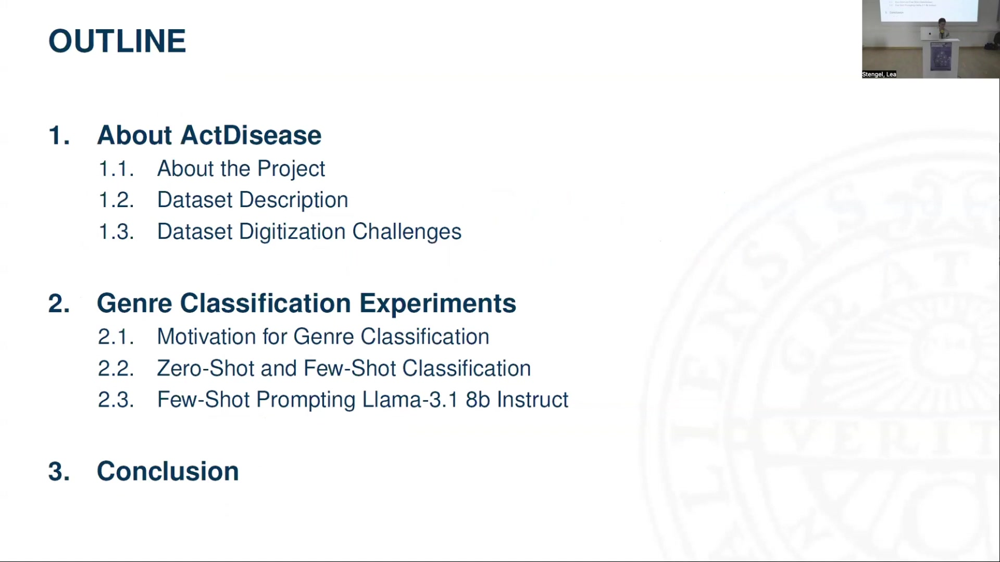
5.1 About ActDisease
The ActDisease project, an initiative funded by the European Research Council (ERC), investigates the histories of patient organisations across Europe. Central to this research are the periodicals published by these organisations in England, Germany, France, and Great Britain. These documents serve as the primary source material for understanding the evolution and impact of patient advocacy.
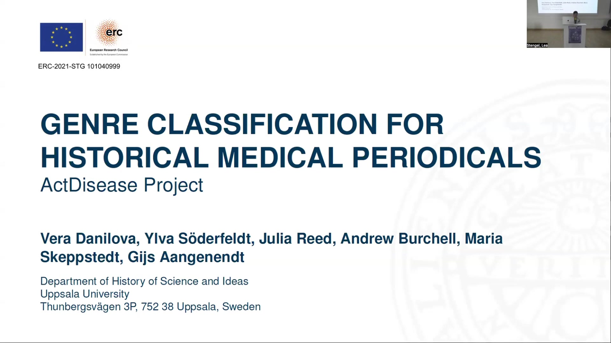
5.1.1 About the Project
ActDisease, an acronym for ‘Acting out Disease – How Patient Organizations Shaped Modern Medicine’, is an ERC-funded research endeavour. Its core purpose is to study how patient organisations in 20th-century Europe contributed to shaping disease concepts, illness experiences, and medical practices. The project focuses on ten European patient organisations from Sweden, Germany, France, and Great Britain, covering a period from approximately 1890 to 1990. The principal source materials are the periodicals, mostly magazines, produced by these patient organisations.
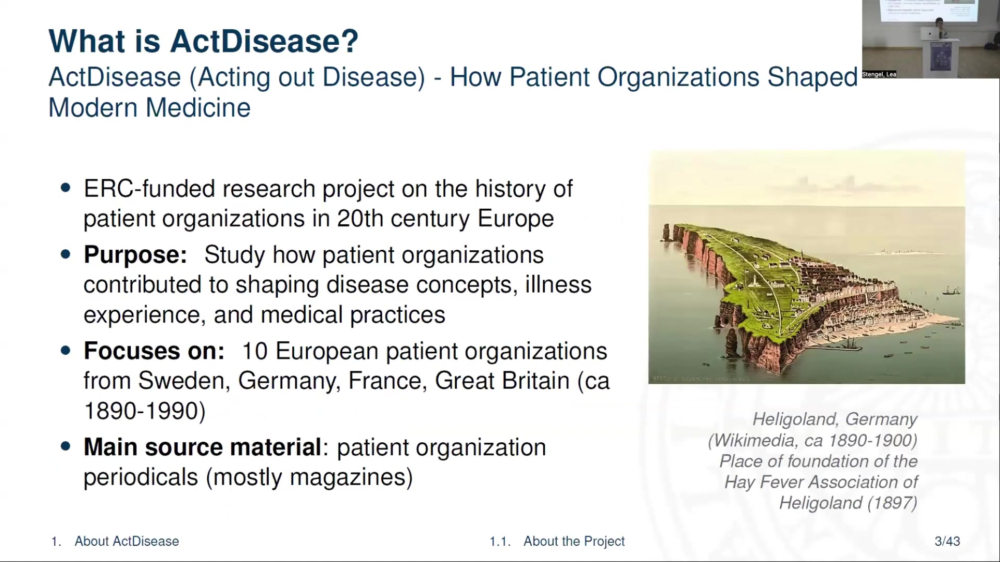
5.1.2 Dataset Description
The ActDisease dataset comprises a private, recently digitised collection of patient organisation magazines. This collection encompasses materials from Germany, Sweden, France, and the United Kingdom, covering diseases such as allergy/asthma, diabetes, multiple sclerosis, lung diseases, and rheumatism/paralysis. The accompanying image displays a table that summarises the magazines by country, disease, total page count, and year coverage, amounting to 96,186 pages in total. Initial explorations reveal a diverse array of text types within these materials, with notable similarities in content across all magazines.
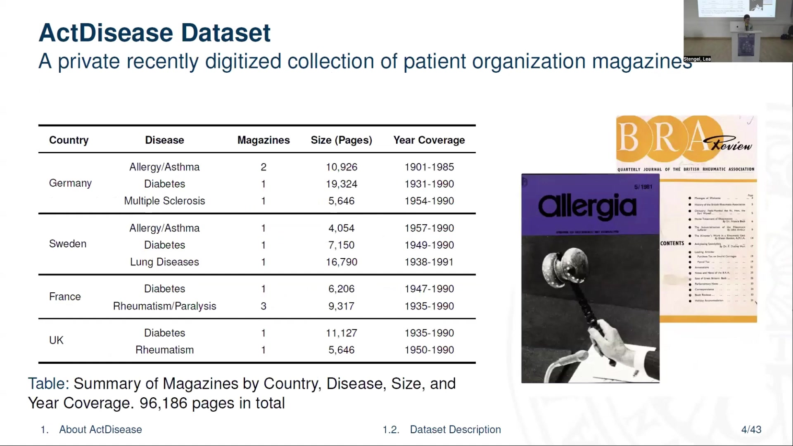
5.1.3 Dataset Digitisation Challenges
The digitisation process for the ActDisease dataset primarily involved Optical Character Recognition (OCR) using ABBYY FineReader Server 14. Whilst this software performed well on most common layouts and fonts, several challenges persist. Complex layouts, slanted text, rare fonts, and varying scan or photograph quality continue to pose difficulties for OCR accuracy. Consequently, remaining issues include OCR errors, particularly in German and French texts, and disrupted reading order. Researchers conducted experiments on post-OCR correction of German texts using instruction-tuned generative models to address some of these problems (DanilovaAangenendt2025?).
Furthermore, OCR errors appear frequently in creative texts, such as advertisements, humour pages, and poems. A significant challenge arises from the co-occurrence of different text types within a single page—for instance, an administrative report might appear alongside an advertisement and a humour section. This heterogeneity means that conventional topic models and term counts, which do not account for such juxtapositions, are likely biased towards the most frequent text type on a page.
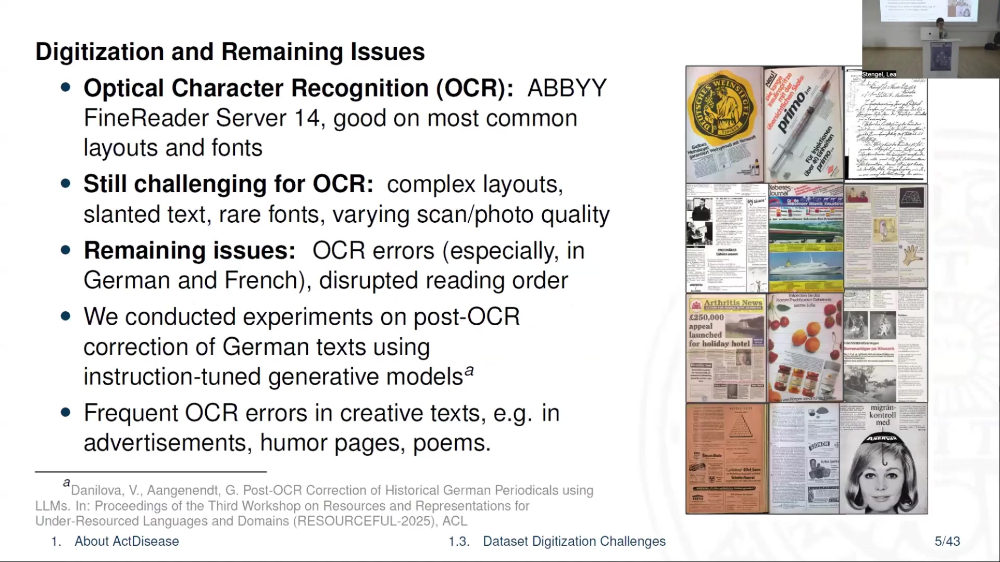
5.2 Genre Classification Experiments
The inherent diversity of texts within the historical medical periodicals necessitates a robust method for distinguishing between them. Genre classification emerges as a pivotal approach to address this need.
5.2.1 Motivation for Genre Classification
An examination of the ActDisease materials reveals a wide variety of text types, which, interestingly, exhibit similarities across all magazines. Different text types, such as administrative reports, advertisements, and humour sections, often appear side-by-side on the same page. This textual diversity poses a challenge for analytical methods like yearly and decade-based topic models or term counts, as these methods typically do not account for such internal heterogeneity.
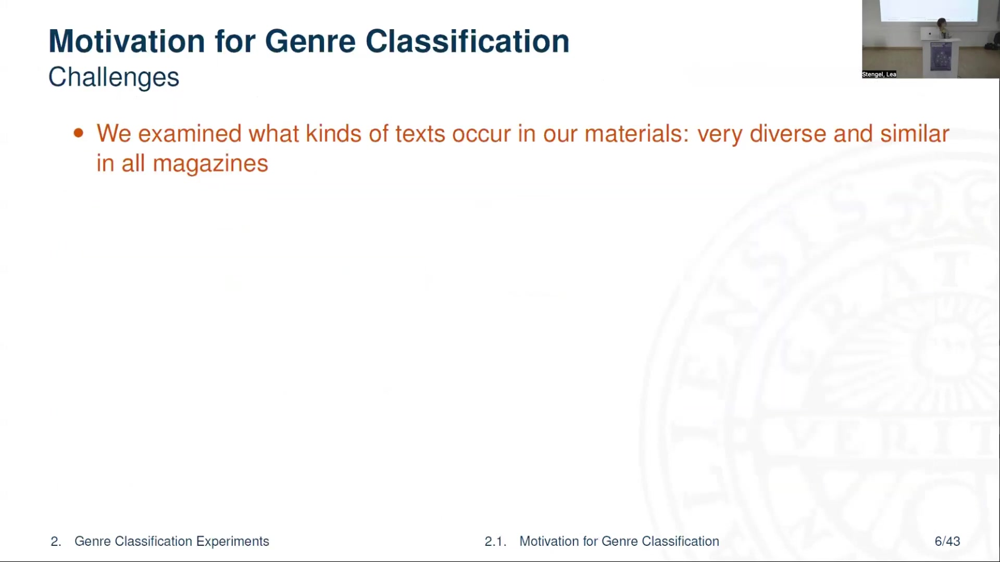
Genre, therefore, presents itself as a useful concept for differentiating kinds of text. In Language Technology, genre is often defined as a class of documents sharing a communicative purpose (Petrenz2004?; Kessler1997?)—a definition that proves highly applicable here. The ability to classify genre is crucial for exploring the data from multiple perspectives to construct historical arguments. Specifically, genre classification enables the comparative study of communicative strategies across different countries, diseases, and publications over time (Broersma2010?). It also facilitates a more fine-grained analysis of term distributions and topic models within distinct genre groups.

The ActDisease data showcases a rich tapestry of genres. Examples include poetry, academic reports (such as studies on the pancreas), legal documents (like deeds of covenant), and advertisements (for instance, for chocolate aimed at diabetics). Instructive messages, including recipes or medical advice, feature prominently, alongside patient organisation reports detailing meetings and activities. Narratives about patients’ lives also constitute a significant portion of the content.
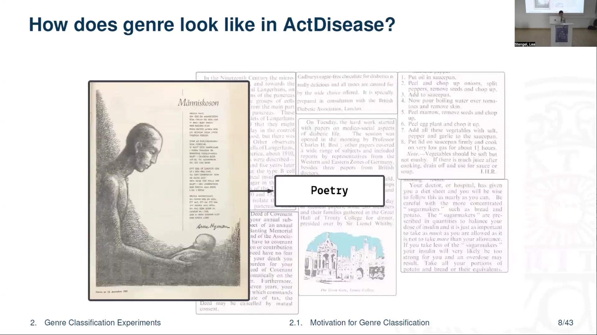
5.2.2 Zero-Shot and Few-Shot Classification
Given the scarcity of annotated data within the ActDisease project, researchers explored both zero-shot and few-shot learning approaches for genre classification (DanilovaSoderfeldt2025?). For zero-shot learning, key research questions focused on whether genre labels from publicly available datasets could be efficiently mapped to the project’s custom labels and how performance would vary across different datasets and models. For few-shot learning, the investigation centred on how performance changes with varying training set sizes across models and whether prior fine-tuning on the full dataset could substantially enhance performance.
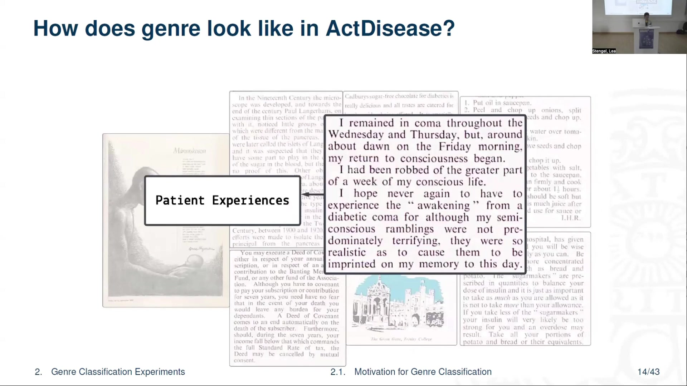
5.2.2.1 Genre Definition and Annotation
The project team, under the supervision of the main historian, defined the genre labels. The aim was to create labels that are useful for separating content within the ActDisease materials and sufficiently general for potential application to similar datasets. The defined genres include:
- Academic: Research-based reports or explanations of scientific ideas (e.g., research article, report).
- Administrative: Documents on organisational activities (e.g., meeting minutes, reports, announcements).
- Advertisement: Promotes products or services for commercial purposes.
- Guide: Provides step-by-step instructions (e.g., health tips, legal advice, recipes).
- Fiction: Entertains and emotionally engages (e.g., stories, poems, humour, myths).
- Legal: Explains legal terms and conditions (e.g., contracts, rules, amendments).
- News: Reports recent events and developments.
- Nonfiction Prose: Narrates real events or describes cultural/historical topics (e.g., memoir, essay, documentary).
- QA (Question & Answer): Structured as questions with expert answers, typically from periodical sections.
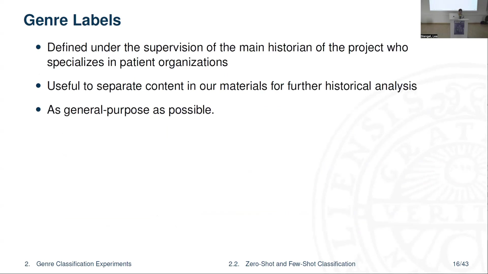
Researchers selected the paragraph as the annotation unit, merging paragraphs from the ABBYY FineReader output based on font patterns (type, size, bold, italic) within a page. Annotators sampled from two periodicals: the Swedish “Diabetes” and the German “Diabetiker Journal”, specifically focusing on the first and mid-year issues for each year. A team of four historians and two computational linguists, all either native or proficient in Swedish and German, performed the annotation. Each paragraph received two annotations, achieving an average inter-annotator agreement of 0.95 Krippendorff’s alpha, indicating a high level of consistency. Annotators used a structured file format, assigning hard genre labels to each paragraph.
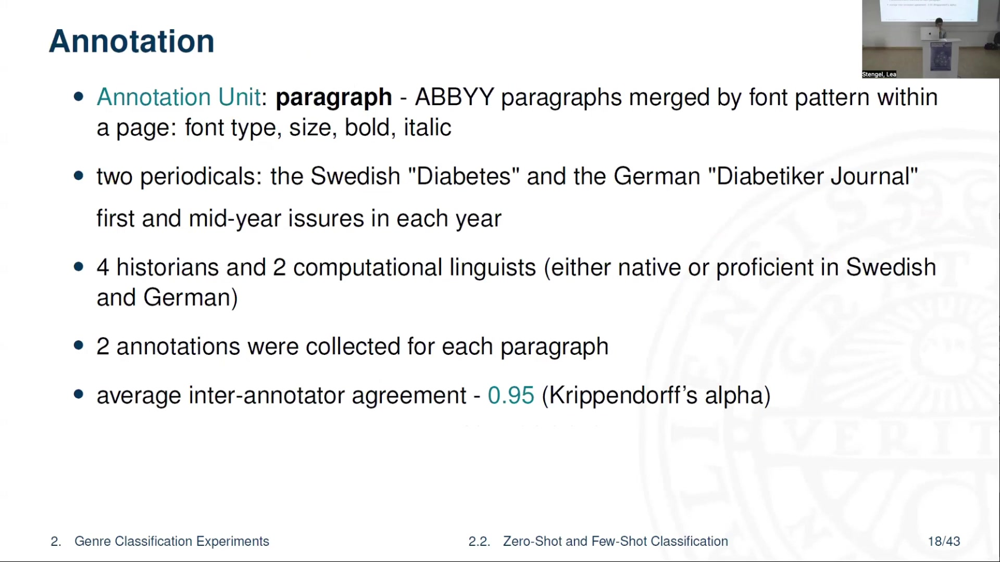 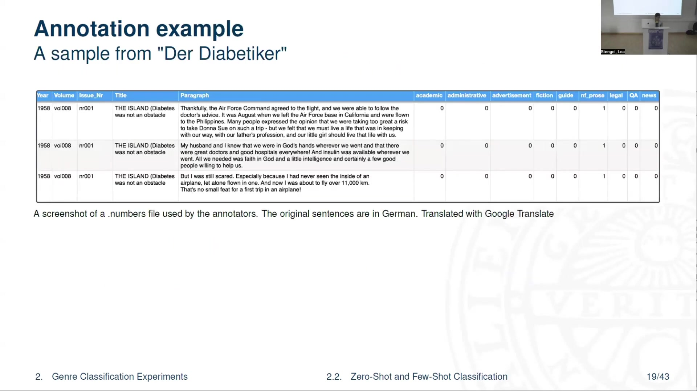
5.2.2.2 Data Splits and Distribution
For the experiments, researchers first split the annotated data into training and held-out sets, with the held-out set comprising approximately 30% of the data. For few-shot experiments, they further divided the held-out set equally and balanced it by label. Researchers excluded the ‘Legal’ and ‘News’ genres from these few-shot experiments due to insufficient training data. Researchers utilised the entire test set for zero-shot experiments. The distribution of genres across languages (German and Swedish) in the training and held-out samples reveals some imbalances. Notably, there is a strong imbalance in ‘Advertisement’ and ‘Nonfiction Prose’ across the two languages.
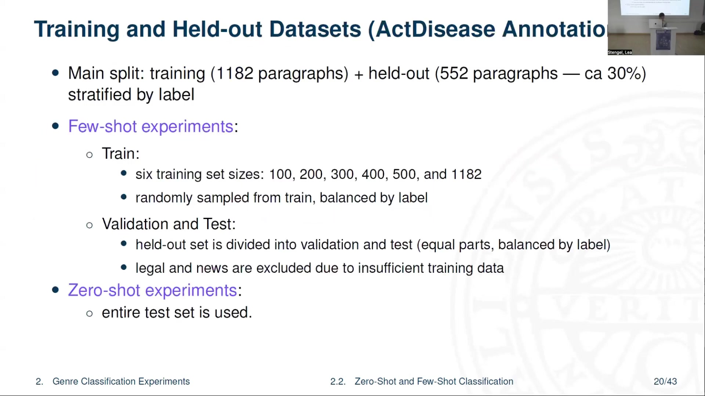
5.2.2.3 External Datasets and Genre Mapping for Zero-Shot Learning
To facilitate zero-shot experiments, researchers incorporated external datasets. These included modern datasets from previous work on automatic web genre classification: the Corpus of Online Registers of English (CORE) and the Functional Text Dimensions (FTD) dataset, both annotated at the document level. Additionally, they used a sample from Universal Dependencies (UDM) Treebanks, which contains sentence-level annotations in multiple languages.
Two annotators independently performed the genre mapping from these external datasets to the ActDisease categories. For the final mapping, researchers selected only assignments with full agreement. This process revealed that for some ActDisease genres, no directly suitable labels existed in the available external datasets. The pipeline for creating training data involved this mapping, followed by preprocessing, chunking, and sampling in several configurations based on language family and label levels (ActDisease original vs. external dataset original).
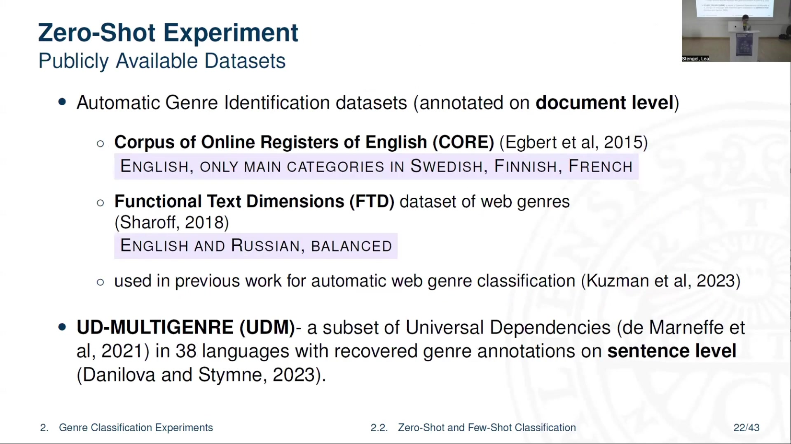
5.2.2.4 Models Employed
Researchers selected multilingual encoders for these experiments, models that have demonstrated success in previous automatic genre classification tasks. The chosen models were:
- XLM-RoBERTa (Conneau2020?)
- mBERT (multilingual BERT) (Devlin2019?)
- historical mBERT (hmBERT) (Schweter2022?)
BERT-like models have seen extensive use in prior work on web register and genre classification (LepekhinSharoff2022?; KuzmanLjubesic2023?; Laippala2023?). XLM-RoBERTa is recognised as a state-of-the-art web genre classifier (Kuzman2023?). The inclusion of hmBERT was particularly pertinent as it is pretrained on a large corpus of multilingual historical newspapers, encompassing the languages in the ActDisease dataset. mBERT was included for comparison with hmBERT, as direct comparison with XLM-RoBERTa is not straightforward. Fine-tuning these models on all configurations of the training data (derived from FTD, CORE, UDM, and a merged set) yielded a total of 48 fine-tuned models. Researchers typically average subsequent metrics across these configurations.
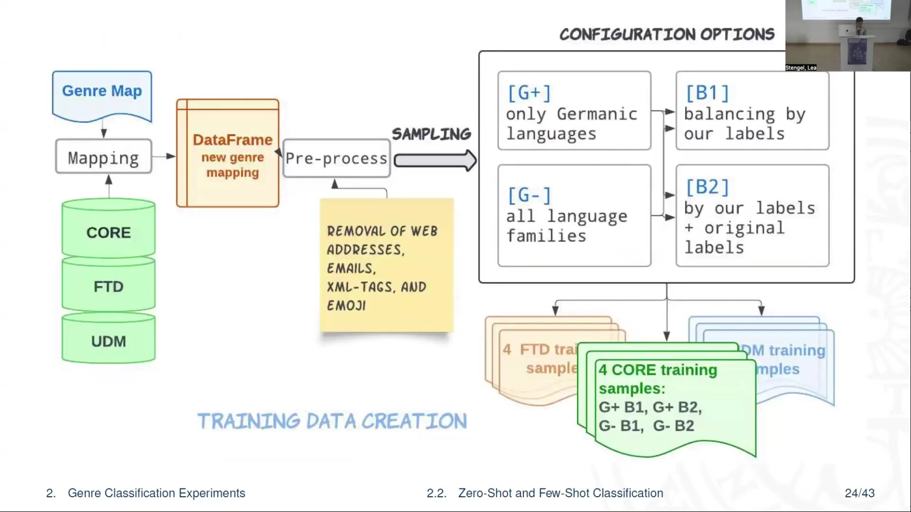 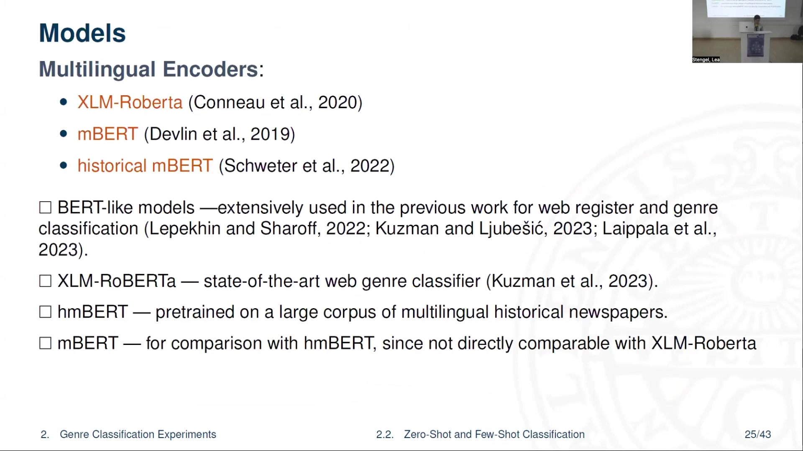
5.2.2.5 Zero-Shot Learning Evaluation
In evaluating zero-shot learning, the imperfect overlap between label sets necessitated an analysis of individual genres and confusion matrices to avoid potential biases. The state-of-the-art web genre classifier, X-GENRE, served as a baseline, considering only the most similar labels.
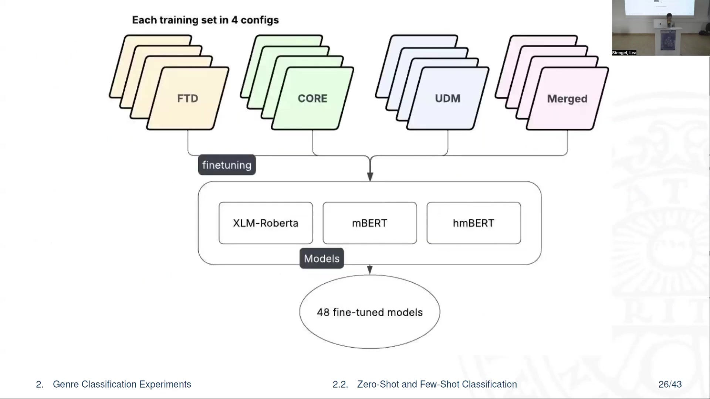
Overall, models fine-tuned on the Functional Text Dimensions (FTD) dataset, using the established mapping, performed better. In most FTD configurations, researchers observed no systematic bias, and per-genre metrics were quite good. An interesting observation emerged: on certain datasets, some models handled specific genres much more effectively than others on average. For instance, XLM-RoBERTa demonstrated superior prediction of ‘QA’ (Question & Answer) texts compared to other models when fine-tuned on UDM. Conversely, hmBERT, when fine-tuned on UDM, showed a 16% average increase in correct ‘Administrative’ predictions over XLM-RoBERTa and mBERT. Models based on the CORE dataset proved adept at predicting the ‘Legal’ genre. However, researchers noted class-specific biases in other datasets: UDM fine-tuning tended towards ‘News’ (as the ‘News’ training data had the highest number of Germanic instances, mostly German), whilst CORE fine-tuning leaned towards ‘Guide’ (as only ‘Guide’ training data in CORE was multilingual).
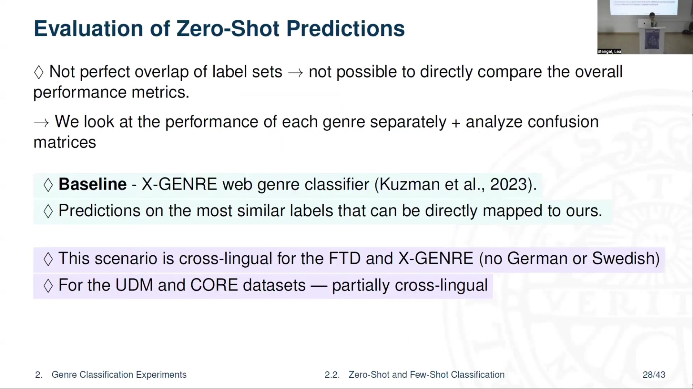
Confusion matrices for specific configurations illustrate this behaviour. For example, hmBERT fine-tuned on UDM (hmbert_UDM_True_True) shows strong performance for ‘Administrative’. XLM-RoBERTa fine-tuned on CORE (xlmr_CORE_True_False) effectively identifies ‘Legal’ and ‘Academic’ texts. XLM-RoBERTa fine-tuned on UDM (xlmr_UDM_False_False) excels with ‘QA’. Finally, XLM-RoBERTa fine-tuned on FTD (xlmr_FTD_False_False) accurately classifies ‘Legal’ texts.
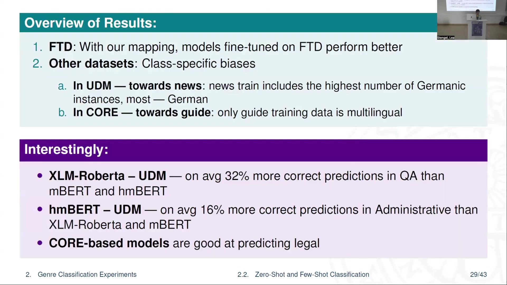
The table below presents detailed average F1 scores per category, averaged across data configurations. Highlighted values in the original presentation (not reproduced here as bold text) indicate performance that is not a result of systematic biases towards those categories. Notably, models fine-tuned on FTD and CORE show strong F1 scores for the ‘Legal’ genre. hmBERT (UDM) performs well for ‘Administrative’, and XLM-RoBERTa (UDM) for ‘QA’.
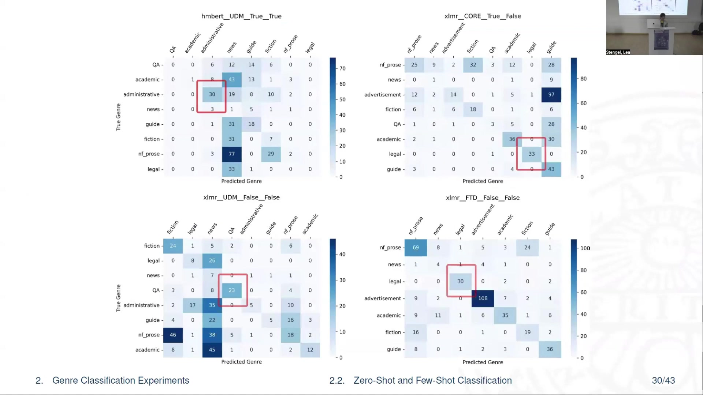
Analysis of average performance across different training configurations (balancing strategies, language family inclusion) for each external dataset (FTD, CORE, UDM) reveals nuances. For FTD, balancing by original labels alongside ActDisease labels ([B2]) or including only Germanic languages ([G+]) decreased performance compared to balancing by ActDisease labels alone ([B1]) or including all language families ([G-]). For CORE, the small number of Finnish and French instances (in the ‘Guide’ genre) slightly decreased performance. For UDM, the presence of other language families and balancing generally improved performance in terms of macro F1.
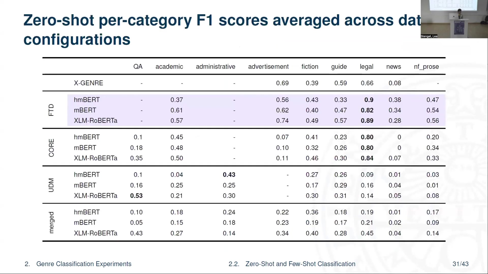
5.2.2.6 Few-Shot Learning Evaluation
The investigation then turned to few-shot learning scenarios.
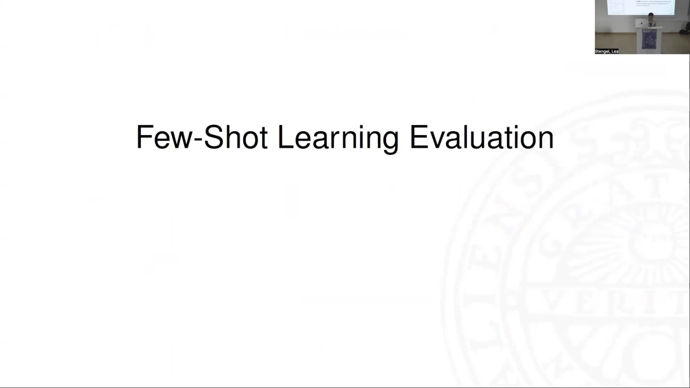
Experiments demonstrated how models performed with varying training data sizes, both with and without prior Masked Language Model (MLM) fine-tuning on the entire ActDisease dataset. This prior MLM fine-tuning (+MLM) proved clearly advantageous. F1 scores generally increased with the number of training instances, although they remained below 0.8 even with 1182 instances. Notably, hmBERT-MLM (the historical model with prior fine-tuning) outperformed other models, particularly at larger dataset sizes, boosting its performance significantly and even surpassing other models by a small margin.
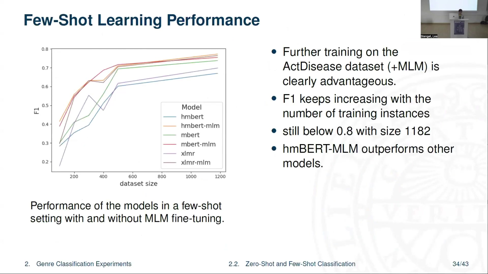
A detailed examination of scores revealed that hmBERT-MLM’s superior performance is largely attributable to its sustained ability to differentiate between ‘Fiction’ and ‘Nonfiction Prose’ as dataset size increases. In contrast, other models, especially XLM-RoBERTa-MLM, exhibited a drastic drop in performance for ‘Fiction’ when using the full-sized training dataset (1182 instances), often over-predicting ‘Nonfiction Prose’ for ‘Fiction’ instances. Both these genres in the ActDisease data frequently contain narratives about patient experiences, particularly concerning diabetes. It is plausible that with a larger data size, the linguistic features of these two genres become more similar, especially as they are confined to the specific domain of patient organisation magazines focused on diabetes and often share themes and narrative structures. This suggests that more data, or perhaps more nuanced features, might be necessary to improve discrimination between these closely related genres.
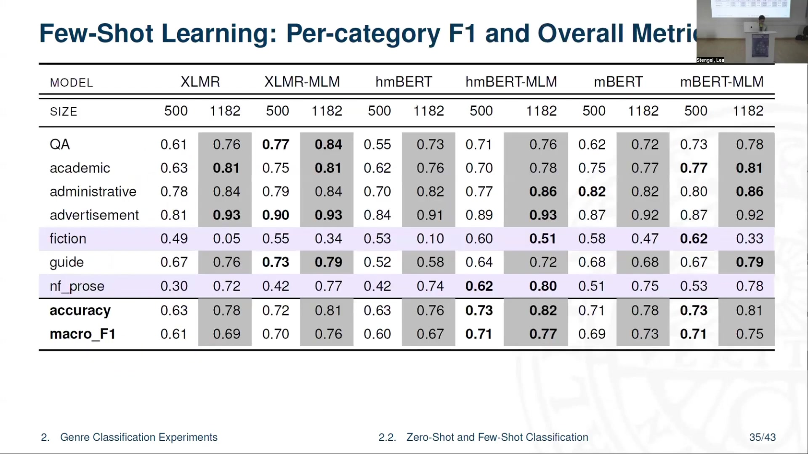 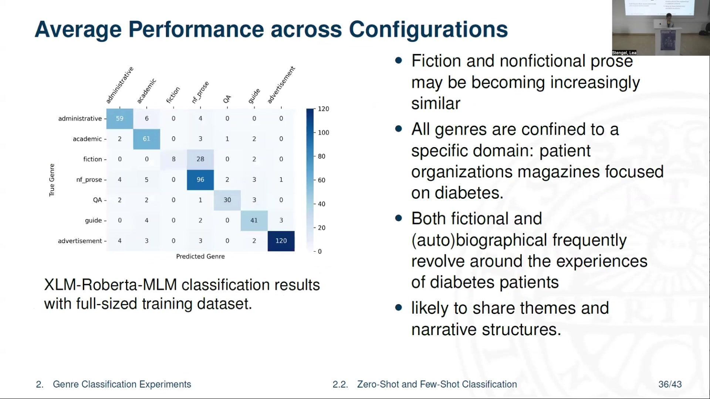
5.2.3 Few-Shot Prompting Llama-3.1 8b Instruct
Recognising the limitations of available data for extensive instruction tuning, researchers also explored few-shot prompting with Llama-3.1 8b Instruct, a prominent multilingual generative model with open weights. The prompt structure incorporated genre definitions and two to three carefully selected examples for each genre. The instruction guided the model to label input text with one of the defined genres based on its perceived purpose and content.
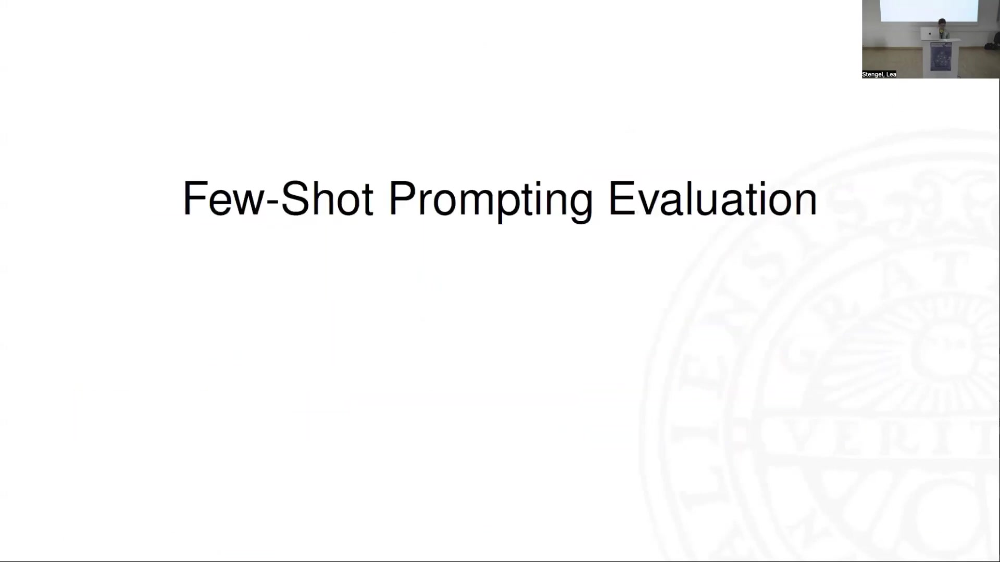
The results from few-shot prompting Llama-3.1 8b Instruct on the zero-shot test set (the entire held-out set) indicate that the model handles certain labels reasonably well. For instance, ‘Legal’ texts achieved an F1-score of 0.84, and ‘Academic’ and ‘Advertisement’ texts scored 0.72 and 0.73, respectively. However, the provision of only two or three examples proved insufficient for the model to adequately represent and distinguish more nuanced genres such as ‘Nonfiction Prose’ (F1-score 0.49), ‘Administrative’ (F1-score 0.60), and ‘News’ (F1-score 0.08). The overall macro average F1-score was 0.59. The confusion matrix reveals particular difficulties in distinguishing ‘Nonfiction Prose’ from ‘Fiction’ and ‘Administrative’ texts, and ‘Advertisement’ from ‘Administrative’ texts.
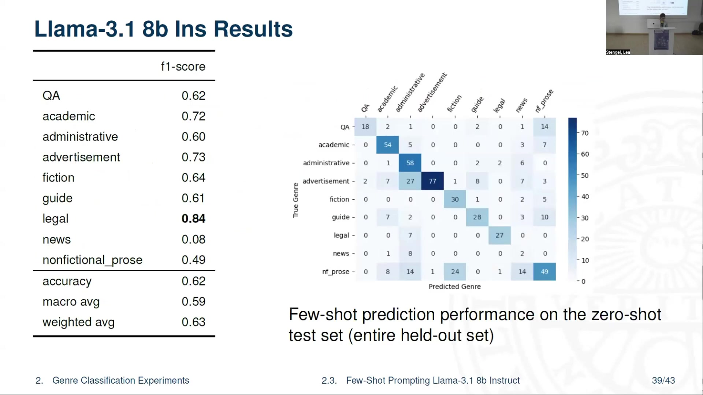
5.3 Conclusion
Historical periodicals, particularly popular magazines, represent a promising yet challenging source for research into the history of science and medicine. Their genre-rich nature reflects diverse communicative strategies employed over time. Accurately accounting for these genres is crucial for the detailed interpretation of text mining results.
This exploration demonstrates that genre classification can significantly enhance the accessibility of such complex historical sources for computational analysis. When faced with no training data, researchers can successfully leverage available modern datasets, provided the genre categories are sufficiently general-purpose. Alternatively, few-shot prompting of capable open generative models, like Llama-3.1 8b Instruct, can achieve decent quality for some genres, although performance may be limited for categories requiring more nuanced understanding with minimal examples.
However, if some annotated data is available, even in limited quantities, few-shot learning with multilingual encoders—such as XLM-RoBERTa or, notably, historical multilingual BERT (hmBERT)—especially when combined with prior Masked Language Model (MLM) fine-tuning on the target domain data, emerges as a superior strategy. For the ActDisease project, this approach yielded the most promising results, with hmBERT-MLM showing considerable gains in performance.
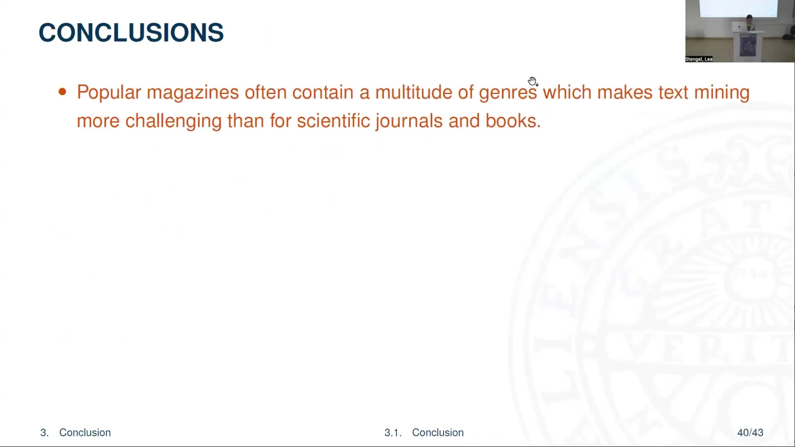
Ongoing and future efforts aim to further refine these methodologies and apply them to specific historical hypotheses. This includes developing a new annotation scheme with more fine-grained genres, an annotation project financed by Swe-CLARIN, exploring synthetic data generation techniques, and implementing active learning strategies to improve classifier quality efficiently. These endeavours seek to enhance the utility of these methods for both the ActDisease project and the broader digital humanities community.
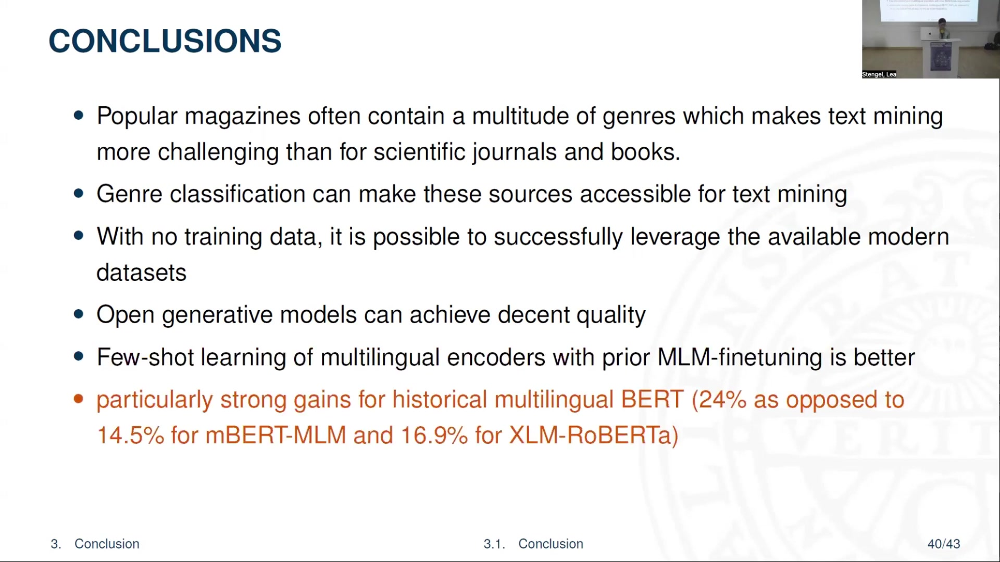
Acknowledgements
The project team extends its gratitude to the annotators: Ylva Söderfeldt, Julia Reed, Andrew Burchell, Maria Skeppstedt, and Gijs Aangenendt. We also thank Dr Maria Skeppstedt and the anonymous reviewers for their valuable feedback. This research received funding from the European Research Council (ERC-2021-STG, 101040999). The Centre for Digital Humanities and Social Sciences at Uppsala University provided essential support in the form of GPUs and data storage.
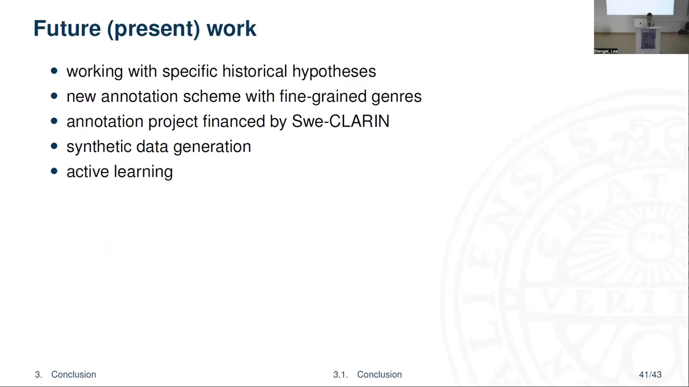
For further information, please visit the project website.
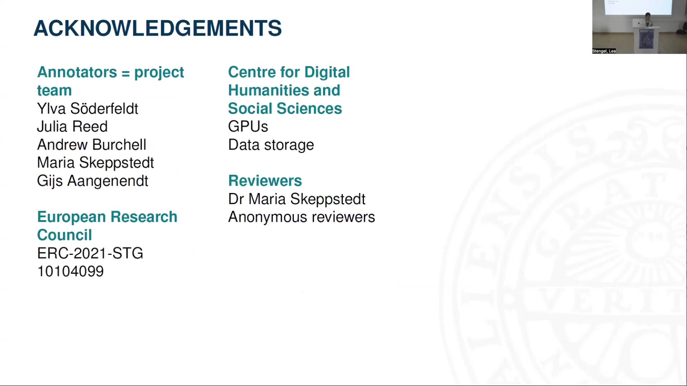